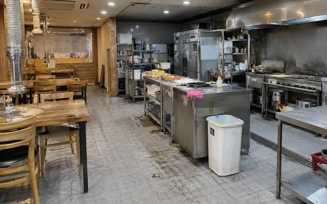
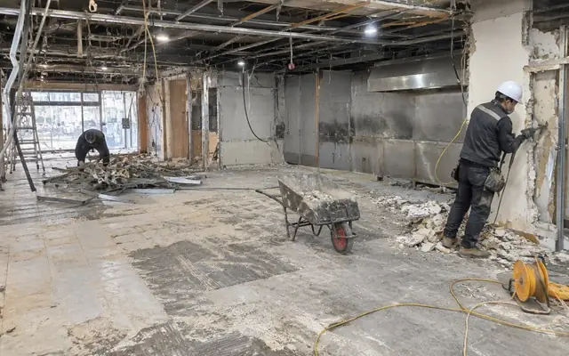
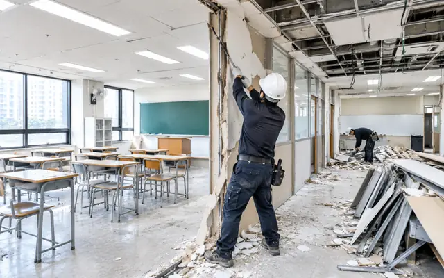
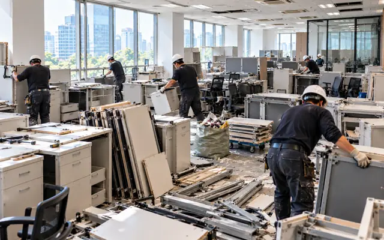
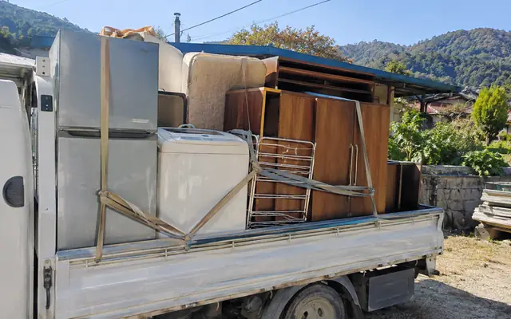
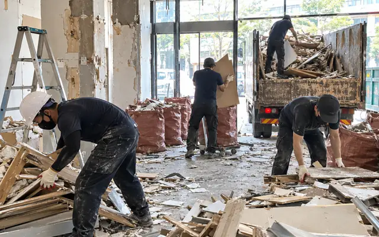
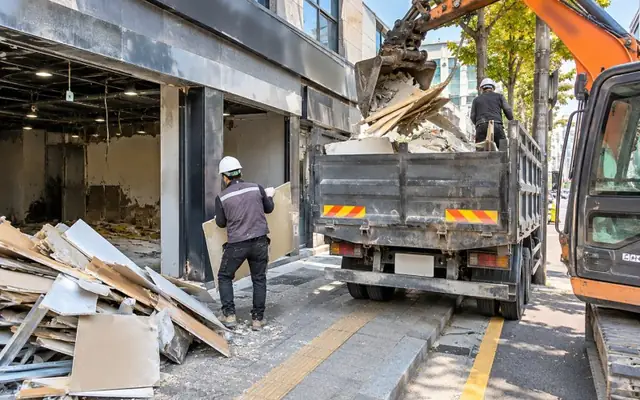
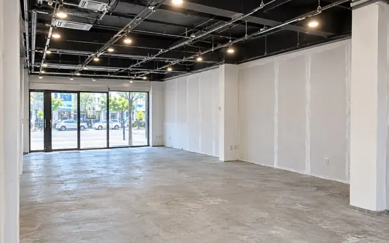

작업 전매장·주방 모습원상복구 전 상태
철거비를 지원받으려면 사업자등록 업체가 한 공사여야 하고, 정산 때 서류가 남아 있어야 합니다. 철거와 함께 서류를 처음부터 맞춰 드립니다.
상가·식당·사무실·학원은 물론 빈집 정리까지, 비우는 작업부터 원상복구·폐기물 처리를 한 번에 진행합니다.

작업 전
내부 철거
학원 철거
사무실 철거
집기 반출
폐기물 반출
반출·상차
작업 완료매장 사진과 평수·위치·층수를 보내주시면 철거 범위부터 정리해 드립니다.
진천은 혁신도시 상가와 산단 창고가 함께 있습니다. 창고는 반출 물량이 커서 분류 계획을 먼저 세웁니다.
집기 반출부터 인테리어 철거, 바닥·벽·천장·샷시 원복까지. 임대차 계약서의 원상복구 조항과 현장 상태를 함께 보고 범위를 정합니다.
사용 가능한 업소용 주방기구·냉장고·테이블·카페 장비는 상태를 보고 매입해, 철거 비용 부담을 덜어드립니다. 매입해 드리는 품목이 있으면 그만큼 전체 정리 비용 부담이 줄어듭니다.
빈집·폐가 정리, 노후 창고, 비닐하우스와 하우스 철거까지. 일부만 헐거나 전체를 내리는 것 모두 현장을 보고 진행합니다.
전체를 비우지 않고 일부 구역만 철거해야 할 때. 동선과 소음을 고려해 시간대를 나눠 진행합니다.
철거하며 나온 목재·철재·합성수지·혼합 폐기물을 분류해 반출하고, 적법하게 처리합니다.
진천읍과 덕산·광혜원 산단, 초평·문백 외곽까지 직접 방문합니다. 창고는 물량과 진입로를 먼저 확인합니다.
진천 시내 상가와 식당, 학원을 정리합니다. 주차 공간과 상하차 위치를 먼저 봅니다.
혁신도시 상가와 사무실, 아파트 단지 상가를 정리합니다. 단지 반출 규정을 먼저 확인합니다.
산업단지 창고와 공장 사무동을 정리합니다. 넓은 창고는 폐기물을 종류별로 나눠 반출합니다.
외곽 창고·농가·비닐하우스와 빈집을 정리합니다. 농로 폭과 장비 반입 여부를 먼저 봅니다.
진천은 산단 창고 물량이 큰 편이라, 반출 전에 폐목재·고철·합성수지·혼합 폐기물로 나누는 작업이 견적의 핵심이 됩니다. 사진에 창고 안쪽까지 담아 보내주시면 방문 전에 큰 흐름을 잡을 수 있습니다.
진천까지 직접 방문합니다. 사진·평수·위치·층수만 알려주셔도 대략적인 견적 범위부터 안내해 드리고, 창고는 물량과 진입로를 사진으로 먼저 확인한 뒤 분류 계획을 세워 견적서를 드립니다.
가게 안쪽 사진과 평수·위치·층수(엘리베이터 유무)를 보내주시면 예상 견적과 순서를 먼저 정리해 드립니다.
방문해서 상태를 확인하고 항목이 적힌 견적서를 드립니다. 지원금 정산에 쓸 서류도 이때 함께 안내합니다.
집기 반출, 인테리어 철거, 원상복구를 순서대로 진행합니다. 매입할 집기는 먼저 골라 두고, 원상복구 범위는 착수 전에 계약서와 함께 확인합니다.
폐기물을 분류해 반출·적법 처리하고, 전자세금계산서와 상세 공사내역서를 발행해 드립니다.
진천 외 지역도 직접 방문해 상담합니다.
지역 이름을 누르면 그 지역 안내 페이지로 이동합니다.
목록에 없는 지역도 위치를 알려주시면 확인해 드립니다.
일반과세 사업자로 전자세금계산서·공사내역서를 정식 발행합니다.
중고집기 매입부터 폐기물 처리까지, 따로 업체를 알아보지 않아도 되게 맡습니다.
임대차 계약서의 원상복구 조항과 현장 상태를 함께 봐서, 어디까지 되돌릴지 착수 전에 정리합니다.
사진과 평수·위치·층수로 예상 범위를 먼저 안내하고, 현장 확인 후 항목별 견적서를 드립니다.
아래 내용을 적어 문자로 보내주시면 대략적인 견적 범위부터 안내드립니다. 사진은 문자에 함께 첨부하고, 매입을 원하는 집기도 적어 주세요.
문자 앱이 열리면 사진을 첨부해서 그대로 보내주세요.
바로 문자 보내기 · 전화 상담 010-4366-7275